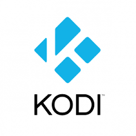

python: atzo, gaur eta bihar
by Mikel Larreategi
Niri buruz
Mikel Larreategi, Eibar, 1981
Informatikan Ingeniaria (EHU, 2004)
Programatzailea CodeSyntax-en
Xakelaria, denbora librean :)
Guri buruz - CodeSyntax
Eibarren, 2000 urtetik
Gaur egun 15 langile (jende bila gabiltza)
Guk python
Hasiera hasieratik python izan da gure garapen eta lan
inguruneetako erabiltzen dugun lengoaia eta tresna.
Ia denerako erabiltzen dugu: webguneak egiteko (azkenean
jana ematen diguna), gure barne-lanetarako scriptak,
bezeroen proiektu gehienak, sistema administrazioko lanak,
segurtasun kopiak, ...
Gero azalduko ditut egiten ditugun gauza batzuk eta nola
erabiltzen dugun python horretarako.
Zer da python?
Goi-mailako programazio lengoaia
Helburu orokorrekoa
Lengoaia interpretatuta
Jada jakingo duzuen arren, python lengoaiaren ezaugarri
formalak hauexek dira:
Goi-mailakoa: maila altuko datu-egiturak erabiltzen direlako (zerrendak, hiztegiak, ...), lengoaian bertan defektuz datozen datu-egiturak dira.
Helburu orokorrekoa: edozertarako erabili daitekeelako
Interpretatuta: ez duelako konpilazio fase bat, interprete batek irakurtzen du kodea eta bertan exekutatzen da. Interprete arruntenaren izena CPython da, baina badaude beste interprete batzuk, hala nola PyPy (python-en idatzitako python interpretea), Jython (Javan idatzitakoa) edo Ironpython (.NET inguruneetarakoa)
Ezaugarri batzuk
Irakurgarritasuna
Indentazioa (4 espazio)
duck-typing Paradigma anitzekoa
Objektuei zuzendutakoa
Inperatiboa
Prozedurala
Funtzionala
Irakurgarritasuna izan daiteke python-en ezaugarri nagusiena: kode blokeak indentatuta daude eta horrela bereizi behar dira, hemen ez dago puntu komarik edo giltzik. horregatik, bistazo baten ikusi daiteke programaren fluxua.
Indentazioa da irakurgarritasuna dakarren ezaugarria. Kode blokeak espazioekin bereizten dira (arau ez idatzi gisa, 4 espazioko indentazioak gomendatzen dira eta ez tabulazioak)
Datu-motei dagokienez duck-typing edo "ahate-mota" erabiltzen du python-ek, hau da aldaigai batek "ahate baten antza badu, ahate batek bezala igeri egiten badu eta ahate batek bezala karranka egiten badu, ahate bat da". Horrek esan nahi du, ez dela aldagaien motarik ezarri behar. Java, C edo beste lengoaia batzuetan programatu baduzue, aldagaien mota definitu behar izaten da, Python-en ez, programatzailea "adin nagusikoa" dela suposatzen da eta badakiela zertan dabilen.
Programazio-paradigmari dagokionez, denera egokitzen da eta ez zaitu bat erabiltzera derrigortzen. Adibidez Java programa txiki bat egin behar baduzu klase bat definitu behar da, eta bertan objektu publiko bat (public static void main(String args)) programak funtzionatu dezan. Edo Cn ere prozedura edo funtzio baten sartu behar da. Python-ek ez zaitu derrigortzen ezertara, nahi baduzu fitxategi bakarrean idatzi dezakezu programa, edo objektuak sortu eta herentzia erabili, edo programazio funtzionalaren paradigma erabili Haskell edo beste lengoaia batzuetan bezala.
>>> import this
The Zen of Python, by Tim Peters
Beautiful is better than ugly.
Explicit is better than implicit.
Simple is better than complex.
Complex is better than complicated.
Flat is better than nested.
Sparse is better than dense.
Readability counts.
Special cases aren't special enough to break the rules.
Although practicality beats purity.
Errors should never pass silently.
Unless explicitly silenced.
In the face of ambiguity, refuse the temptation to guess.
There should be one-- and preferably only one --obvious way to do it.
Although that way may not be obvious at first unless you're Dutch.
Now is better than never.
Although never is often better than *right* now.
If the implementation is hard to explain, it's a bad idea.
If the implementation is easy to explain, it may be a good idea.
Namespaces are one honking great idea -- let's do more of those!
python-ek berak bere filosofia laburbiltzen duen esaldi multzo bat
dauka. python interprete bat ireki eta "import this" idazten baduzue
hortxe agertuko dira.
Agian, esaldi guzti horietatik, bost nabarmenduko dituzte, horietan
esan daiteke dagoela lehen aipatutako irakurgarritasun eta sinpletasuna
laburbiltzen duen guztia
>>> import this
The Zen of Python, by Tim Peters
Beautiful is better than ugly.
Explicit is better than implicit.
Simple is better than complex.
Complex is better than complicated.
Flat is better than nested.
Sparse is better than dense.
Readability counts.
Special cases aren't special enough to break the rules.
Although practicality beats purity.
Errors should never pass silently.
Unless explicitly silenced.
In the face of ambiguity, refuse the temptation to guess.
There should be one-- and preferably only one --obvious way to do it.
Although that way may not be obvious at first unless you're Dutch.
Now is better than never.
Although never is often better than *right* now.
If the implementation is hard to explain, it's a bad idea.
If the implementation is easy to explain, it may be a good idea.
Namespaces are one honking great idea -- let's do more of those!
Liburutegi estandarra
Defektuz datozen modulu asko
Ez dira "extrak" instalatu behar
Eguneroko lanen %95a betetzen dute
python-en liburutegi estandarra da eguneroko lanen zati handi
bat egiteko beharrezko izaten ditugun liburutegi edo moduli
gehigarri gehienak dituena.
Inolako estrarik instalatu gabe 300 modulutik gora datoz
instalazio estandarrean
sys / os
Fitxategi sistemako eragiketak egiteko
datetime
datak, orduak eta hauen eragiketak
pdb
debuggerra
urllib/urllib2
webguneen htmla lortzeko
csv
csv fitxategien kudeaketa
Hemen liburutegi estandarrean dauden moduluetako batzuk.
Beste asko ere badaude (kanpo prozesuak exekutatzeko, XML
fitxategiak irakurtzeko, JSON egiturak sortzeko, ...), edo
gure programen testak exekutatzeko unittest esaterako.
Hirugarrenen moduluak
Baina liburutegi estandarrean ez dauden beste milaka liburutegi ere badaude
edozer dela ere egitea nahi duguna, pypi horretan aurkitu ditzakegu
requests
urllib for humans PIL / Pillow
irudien kudeaketa
Beautifulsoup
HTMLa parseatzeko
xlrd / xlwt
Excel fitxategiak irakurri eta idazteko
MySQL-python, psycopg, cx_Oracle, sqlite3, pymssql
Datu-base erlazionaletara konektatzeko
framework-ak
Liburutegi estandarra eta liburutegi gehigarriak oso erabilgarriak dira
bai script txikiak zein programa handiak egiteko, baina askotan programazio inguruneak
erabiltzen dira, webguneak egiterakoan esaterako, filosofia eta lan egiteko modu berbera
jarraitzen duten liburutegiak integratzen dituztelako.
Framework ezberdin asko dago python-en, asko web ingurunera zuzendutakoak, baina ez horretarako
bakarrik. Hemen aipatutakoak muestra txiki bat dira, besterik ez.
Mahaigaineko aplikazioak egiteko tresnak ere (PyGTK eta Tkinter) hemen sartu ditut, azkenean
programazio inguruneak ere bai baitira.
Eta guk zer egiten dugu?
Web aplikazioak
Intranetak
Datu-base kudeaketa aplikazioak
Edukiak kudeatzeko sistemak
Webguneak
Eta zer darabilgu guk?
Plone
Edukiak kudeatzeko sistema
Webguneak egiteko tresna
GPL lizentzia librea
Plone
Nabigatzailearen bidez webguneak egiteko tresna
Kudeaketa interfazae nabigatzailean (ez FTP, ez HTML)
+40 hizkuntzatara itzulita
Komunitate aktiboa (konferentziak, sprintak)
Django
Webguneen garapena egiteko ingurune arin eta ahaltsua
Datu-base erlazionalekin integrazioa
Plantilla sistema ahaltsua
Nahi duzuna hasieratik era errazean egiteko bezalakoa
Eta zer darabilgu guk?
pyramid
Framework arin-arina
Ez du erabakirik hartzen:
Zuk nahi duzun persistentzia/datu-basea
Zuk nahi duzun URL sistema (traveral/pattern)
Zuk nahi duzun plantilla sistema
Azkarra, azkarra, azkarra!!!
Guk ia datu-persistentziarik behar ez dugun proiektu batzuetan
erabili dugu, APIak egiteko edo APIetako datuak kontsumitzeko.
Eta zer darabilgu guk?
Odoo
ERP bat (lehen OpenERP, TinyERP)
Fakturazioa, kontabilitatea, CRMa, proiektuak, bezeroak, ...
Oinarri bat ematen dizu eta hortik moduluak gehitzen, kentzen, aldatzen
bezeroaren beharretarako tresna bat garatzen da.
Ansible
Informazio sistemen automatizaziorako tresna
Zerbitzariak, lan-inguruneak, aplikazioak instañatzeko inguruneak
+100 zerbitzari ditugu
100 zerbitzari baino gehiago ditugu, guztien konfigurazioak kudeatu behar dira:
firewallak, sistemaren eguneraketak, ssh gakoak aldatzea, ...
Eta zer dago hortik zehar?
Eta hori batzuk aipatzearren.
Kodi
Media Center bat
Pluginak python-en idatzita
Adibidez: ETBren APIa

Gure disko gogor baten ditugun pelikula, musika, serie eta abarrak era erraz
baten ordenatzeko tresna, azpitituluak, karatulak, ...
Pluginekin hainbat gauza egin daitezke: pelikulak, zuzeneko ekitaldiak, futbola, ...
Pluginak python-en idatzita daude.
python gure inguruan
ACPySS elkartea / PySS Donostia 2014-2015-2016
EuroPython Bilbo 2015 eta 2016
Laburbilduz...
Lengoaia erraza
Lengoaia ahaltsua
Liburutegi ugari
Aplikazio asko
Galderarik?